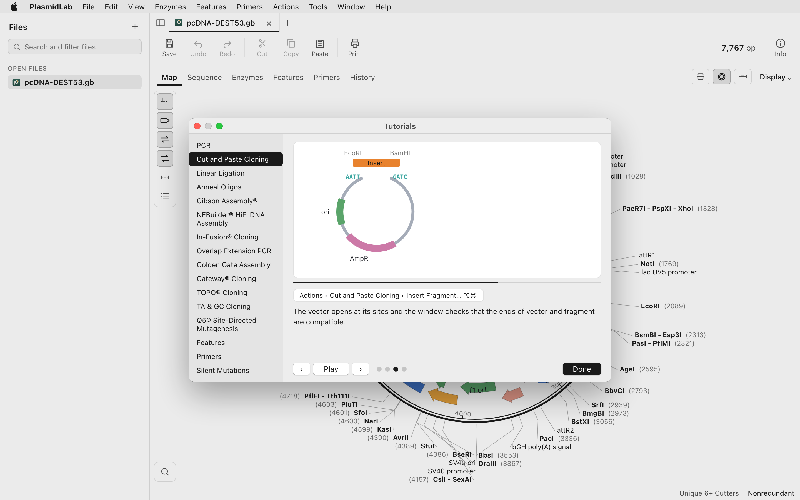

Enzymes and enzyme sets
Pick the enzymes you keep in the freezer, save them as a set, and see only those on the map. Cut sites, fragment sizes and a simulated gel from the same digest.

PlasmidLab is a plasmid map and sequence editor for Mac and Windows. Describe the construct you want in the panel, and the AI agent designs the cloning on your own sequences, then plays the walkthrough step by step.
Six cloning designs ship inside the app, each with its own sequences, so there is something to run the minute it is installed.
What you type
Open in the window
pUC19-GFPmut3b.gb expression_vector.gbThe agent reads the sequences that are actually open. It runs the digests, the PCRs and the assembly with the app's own tools, so the plan is checked against your DNA rather than written from a recipe.
The insert sits between BamHI and HindIII, and the vector carries both in its cloning site. One double digest of each.
Two fragments from each digest. The agent names which band to take and shows the ends it will join.
The two overhangs differ, so the insert can only go in facing forward. The product opens as a new plasmid you can read, annotate and save.

Open a file from the menu or drop it on the window. Circular and linear maps, the sequence with its translations and features, and everything you read a construct with sitting in the same window. No account, no browser tab, no upload.


Pick the enzymes you keep in the freezer, save them as a set, and see only those on the map. Cut sites, fragment sizes and a simulated gel from the same digest.
A primer database you add to, binding sites drawn on the map and the sequence, and PCR run on the real template so the product is a sequence you can keep.

Run a digest out as a simulated gel, lane by lane. Open .ab1 and .scf traces, align sequences, check codon usage, find CRISPR guides, detect features and look at secondary structure.

Describe the construct in the words you would use at the bench. Get back a cloning design that was run on your own sequences, and watch it play out before you order a single primer.
It does not hand you a generic protocol. It picks up the sequences open in the window and uses the app's own tools on them, so every enzyme, every fragment and every overhang in the plan is one that exists in your DNA. Then it animates that exact design on the map.
The agent cuts, amplifies and assembles with the same tools you would use by hand. If a site it wanted is not there, it finds out the same way you would.
The plan and the animation carry the actual enzyme names, fragment sizes and overhangs, so you can check the design instead of trusting it.
The walkthrough runs in the window, one step at a time, at your pace. It is drawn for the design in front of you, not picked from a library.
Use the Claude Code, Codex or Grok CLI you already have, or your own API key, and sign in from the panel. The editor and every cloning tool work with none of them installed.

Run any of these yourself from the menus, or let the agent choose between them and show you why. Either way the product is a real sequence in a new tab.
Your existing files open as they are
Reads and writes .dna, GenBank and FASTA, and opens .ab1 and .scf traces. File > Open, or drop the file on the window.
Under Help > Try a Cloning Design. Each one opens its own plasmids and puts the brief in the panel, so you can send it and watch the whole thing happen on day one.
One double digest of each plasmid, one ligation, and the insert can only go in one way round.
“Move the GFP from the pUC19 plasmid into the expression vector.”
No restriction site in the right place, so the join is made by homology instead: design the primers, then assemble.
“Get the GFP from the template into the vector, right behind the CMV promoter, without leaving a scar.”
The part carries an extra site the same enzyme would cut, so that has to go first, without changing a single amino acid.
“Clone the GFPmut3b part into pPS-GG1 and give me the finished plasmid.”
Nothing to cut at either end, so the new join has to be carried in on primer tails, in frame and with no scar left behind.
“Delete codons 97 to 136 of the GFP in pPS-T7-His-GFP, in frame and without leaving a scar.”
Two recombination reactions in order, and the antibiotic you plate on has to change between them.
“Get the GFP from BBa_E0040 into pcDNA-DEST53, by way of an entry clone in pDONR221.”
Four genes and three 2A linkers behind one promoter. Every junction has to keep the codons in step.
“Put GFP, mCherry, PuroR and HygR behind the CMV promoter as one reading frame, with the 2A linkers between them.”

It is a desktop application. You download one file and open it, the way you would any other program.
Apple silicon and Intel Macs both. After install, sequencing traces and .dna, GenBank and FASTA files open with a double click.
After install, sequencing traces and .dna, GenBank and FASTA files open with a double click.
If a design it wrote does not hold up at the bench, or a file of yours will not open, we want the file and the brief you typed.
The six exercises come with their own plasmids, so you can see the agent work before you put any of your own sequences in front of it.